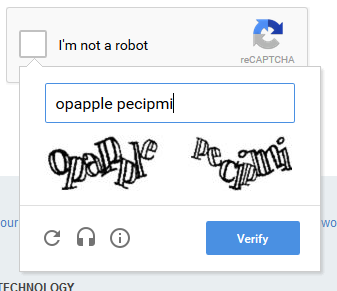
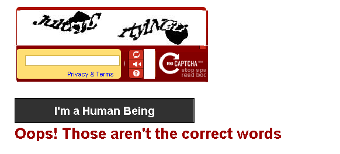
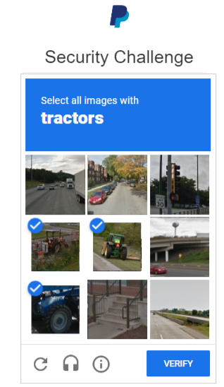

We believe security software like Whonix needs to remain Open Source and independent. Would you help sustain and grow the project? Learn more about our 14 year success story and maybe DONATE!
MetadataDocumentationTor BrowserPrevious page: MetadataIndex page: DocumentationNext page: Tor BrowserGeo-blocking - Unreachable Websites

A website is unreachable? Shows access denied or a captcha?
General Issue
A website I am trying to reach is blocking access over Tor.
Sometimes websites will block Tor users because they can't tell the difference between the average Tor user and automated traffic. The best success we've had in getting sites to unblock Tor users is getting users to contact the site administrators directly. Something like this might do the trick:
"Hi! I tried to access your site xyz.com while using Tor Browser and discovered that you don't allow Tor users to access your site. I urge you to reconsider this decision; Tor is used by people all over the world to protect their privacy and fight censorship. By blocking Tor users, you are likely blocking people in repressive countries who want to use a free internet, journalists and researchers who want to protect themselves from discovery, whistleblowers, activists, and ordinary people who want to opt out of invasive third party tracking. Please take a strong stance in favor of digital privacy and internet freedom, and allow Tor users access to xyz.com. Thank you."
In the case of banks, and other sensitive websites, it is also common to see geography-based blocking (if a bank knows you generally access their services from one country, and suddenly you are connecting from an exit relay on the other side of the world, your account may be locked or suspended).
If you are unable to connect to an onion service, please see I cannot reach X.onion!.The Tor Project - Support Portal: A website I am trying to reach is blocking access over Tor.
Censors
 Tor Censorship can mean two different things.
Tor Censorship can mean two different things.
- A) Destination website level: This wiki page outlines Tor blocks by destination websites.
- B) internet service provider (ISP) level: If connections to the Tor network are blocked by the user's ISP, then bridges or other circumvention tools are necessary.
A number of websites or services actively block Tor users via:
- A DNS query-based list used to tag IP addresses.
- Content delivery network (CDN) and/or blocking software like Akamai and Cloudflare.
- Other individual blocks.
But not only Tor is often blocked. Also many IPs by many VPNs or proxies are often blocked. This is a huge issue. Even people using clearnet without something like Tor or VPN often presented with captchas or completely geo-blocked.
The CDN provider Cloudflare is used by millions of websites. [1] Many of the top websites are using Cloudflare. See also the Great Cloudwall / Stop Cloudflare / #deCloudflare #Crimeflare project (This redirection link might always link to a functional version.) (on hackernews), which has (non-exhaustive list):
- English version readme / non-English version contains a long list of arguments why cloudflare should not be used,
- ethics,
- anti-cloudflare citations, memes, outage report collections,
- incidents,
- list of websites using cloudflare,
- list of Tor blocking websites
Clarification of Whonix Role in Website Reachability
This issue is unspecific to Whonix and specific to Tor, VPNs, proxies.
Can Whonix be the cause of the inability to access specific destination websites? No. If connectivity is generally functional (some websites can be reached), never in the history of Whonix, any website were reachable in Tor Browser outside of Whonix (such as Tor Browser on Debian) while unreachable in Tor Browser inside of Whonix. Neither the Whonix Tor Browser Differences nor Whonix firewall discriminate against specific websites.
Different Treatment of Tor Browser Versus Other Applications
A potential cause for confusion is the following: Cloudflare treats Tor Browser users differently than other browsers (such as Firefox) or command line substitutes (such as curl) when being used over Tor. Cloudflare discusses this in their announcement of the Cloudflare Onion Service:
Today's edition of the Crypto Week introduces an "opportunistic" solution to this problem, so that under suitable conditions, anyone using Tor Browser 8.0 will benefit from improved security and performance when visiting Cloudflare websites without having to face a CAPTCHA.Introducing the Cloudflare Onion Service
It is therefore possible that some websites can be visited with Tor Browser while attempting to fetch these websites with command line utilities such as curl would lead to a different result, specifically a captcha.
Bypass Tor Censorship
There are various ad-hoc methods available to try and circumvent blocks. Method A) or B). Choose one.
- A) create a tunnel
Connecting to Tor before a Tunnel-link
(Proxy/VPN/SSH).
Connection Scheme: User → Tor →
proxy/VPN/SSH → Internet
In most cases it is unnecessary to create a tunnel which pairs Whonix with other protocols (such as a VPN) in order to access the content.
- B) fetch content via other websites
The following services fetch content via other websites, which is a
privacy trade-off. Furthermore, only some services are effective with
embedded, non-static content or support specific file types like PDF,
.exe, and mp3. [2]
Service |
URL |
Comment |
Non-static Embedded Content |
PDF, .exe, mp3 |
|---|---|---|---|---|
The Internet Archive's Wayback Machine |
|
Archive.org respects robots.txt restrictions, works best with JS enabled |
No |
Yes |
Archive.is |
|
Ideal for news sites, doesn't require JS |
No |
No |
Google Cache |
|
Google sometimes blocks these requests |
No - static only |
No |
Startpage.com |
|
Not always efficacious |
No |
No |
Any Searx Instance [5] |
|
Not always efficacious |
No |
No |
Hypothes.is |
|
Behind Cloudflare |
Yes |
Yes |
Online Proxies |
hide.me/en/proxy, proxysite.com, hidester.com/proxy |
- |
Yes |
Yes |
The Tor community also recommends: [6]
To avoid captchas that are sometimes required when visiting YouTube, use hooktube.com/ (behind Cloudflare).
imgur.com blocks Tor uploads, to upload images on an imgur domain go to a stackexchange website (for example tor.stackexchange.com), click on Ask a Question, use the image upload tooltip to upload the image, the resulting url will have a i.stack.imgur.com/... form.
Impact on Anonymity
In short: None. Geo-blocking has no influence on the anonymity provided by Whonix.
Whonix provides reliable IP hiding, but cannot make IP address completely disappear. This is impossible. No tool can do this.
There are two distinct strategies for user anonymization.
- A) Unique Pseudonym On Demand: This approach generates a new, random pseudonym for each user session. It aims to ensure that activities from one session cannot be linked to those of another by external observers. There is no known tool providing such functionality, that is considered safer than Tor by security experts. See also Comparison of anonymizers considered for the implementation of the Anonymous Operating System Whonix.
- B) Uniformity: This method aims to make
every user appear identical to external observers, employing a "safety
in numbers" strategy that makes it difficult to distinguish individual
users within a larger group of similar traffic. The concept is
encapsulated by the phrase
Anonymity Loves Company[7], a term that the Tor Project has made popular. This is the approach used by Tor Browser and Whonix
Since Whonix is based on Tor (why?), it aims to enhance the functionality of Tor, embracing similar design principles.
The IPs of Tor exit relays are publicly known. This is why censors can easily download the list of Tor related IP addresses and block these.
Related FAQ: You should hide the list of Tor relays, so people can't block the exits.
Whonix is an anonymous operating system, but as of the time of writing, it does not focus on geo-blocking circumvention. In the future, Whonix might implement a feature to facilitate the use of tunnels.
Captcha Images
Captcha are related to geo-blocking. When using a different IP such as by using Tor or a VPN, users are more likely to get pestered with captcha challenges.
 
Footnotes
- * https://community.cloudflare.com/t/statistically-speaking-whats-the-percentage-of-total-sites-that-use-cf/372054 * https://blog.cloudflare.com/application-security/
- https://gitlab.torproject.org/legacy/trac/-/wikis/org/doc/ListOfServicesBlockingTor#ad-hoc-solutions-for-accessing-blocked-content-on-tor
- * Source: Ad-hoc Solutions for accessing blocked content on Tor * License: Content on this site is Copyright The Tor Project, Inc.. Reproduction of content is permitted under a Creative Commons Attribution 3.0 United States License.
- Note: The icon is not visible with Tor Browser's security slider set
to safest, but can still be clicked. Startpage
documentation states:
Pages viewed through the proxy are served to you anonymously. No connection is made between your computer and the remote site. Because of their potential for being used to identify you, JavaScript is modified and cookies are disabled for proxied pages.
- Searx instances utilizing v3 onions can be found here.
- https://gitlab.torproject.org/legacy/trac/-/wikis/org/doc/ListOfServicesBlockingTor#other-relevant-services
- https://www.freehaven.net/anonbib/cache/usability:weis2006.pdf
Categories: Documentation